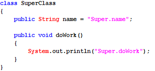

 

通过对象调用字段,在编译时期就已经决定了调用那一块内存空间的数据.
--------->字段不存在覆盖的概念,在多态时,不能有多态特征(在运行时期体现子类特征).
只有方法才有覆盖的概念.


什么是代码块:
在类或者在方法中,直接使用"{}"括起来的一段代码,表示一块代码区域。
代码块里变量属于局部变量，只在自己所在区域(前后的{})内有效。
根据代码块定义的位置的不同,我们又分成三种形式:
1):局部代码块:直接定义在方法内部的代码块:
一般的,我们是不会直接使用局部代码块的,只不过我们会结合if,while,for,try等关键字联合,表示一块代码区域.
2):初始化代码块(构造代码块):直接定义在类中.
每次创建对象的时候都会执行初始化代码块:
每次创建对象都会调用构造器,在调用构造器之前,会先执行本类中的初始化代码块.
通过反编译之后,我们发现,初始化代码也作为构造器的最初的语句.
我们一般不使用初始化代码块的,难看,即使要做初始化操作,我们一般在构造器中做即可,如果做初始化操作的代码比较多,此时构造器的结构比较混乱,此时专门定义一个方法做初始化操作,再在构造器中调用即可.
3):静态代码块:使用static修饰的初始化代码块.
在主方法执行之前执行静态代码块,而且只执行一次.
main方法是程序的入口,为什么静态代码块优先于main方法执行.
--->:静态成员随着字节码的加载也加载进JVM,此时main方法还没执行,因为方法需要JVM调用.
先把字节码加载进JVM, 而后JVM再调用main方法.
一般的,我们用来做初始化操作,加载资源,加载配置文件等.


final修饰符
为什么得需要使用final修饰符:
继承关系最大弊端是破坏封装:子类能访问父类的实现细节,而且可以通过方法覆盖的形式修改实现细节.
-----------------------------------------
多个修饰符之间是没有先后关系的. public static final /public final static /final static punlic.
-----------------------------------------
final本身的含义是“最终的,不可改变的”，它可以修饰非抽象类，非抽象方法和变量。注意：构造方法不能使用final修饰，因为构造方法不能被继承，肯定是最终的。
final修饰的类: 表示最终的类, 该类不能再有子类.
只要满足以下条件就可以把一个类设计成final类：
① 某类不是专门为继承而设计。
② 出于安全考虑，类的实现细节不许改动,不准修改源代码。
③ 确信该类不会再被拓展。
面试题:列举5个Java中内置的使用final修饰的类.
java里final修饰的类有很多，比如八大基本数据类型保证类和String等。
-----------------------------------------
final修饰的方法: 最终的方法,该方法不能被子类覆盖.
什么时候的方法需要使用final修饰.
1):在父类中提供的统一的算法骨架,不准子类通过方法覆盖来修改. 此时使用final修饰.模板方法设计模式.
2):在构造器中调用的方法(初始化方法),此时一般使用final修饰.
注意: final修饰的方法,子类可以调用,但是不能覆盖.
-----------------------------------------
final修饰的变量: 最终的变量,常量,该变量只能赋值一次,不能再赋值.
final是唯一可以修饰局部变量的修饰符.
final修饰的变量:表示常量,只能赋值一次,不能在赋值.
-----------------------------------------------------------------------------------------
1):final变量必须显示地指定初始值，系统不会为final字段初始化。
2):final变量一旦赋予初始值，就不能被重新赋值。
3):常量名规范：常量名符合标识符，单词全部使用大写字母，如果是多个单词组成,单词间使用下划线隔开。
int类型的最大值: final int MAX_VALUE = ....;
补充概念:全局静态常量: public static final 修饰的变量,直接使用类名调用即可.
-----------------------------------------------------------------------------------------
面试题: final修饰的引用类型变量到底表示引用的地址不能改变,还是引用空间中的数据不能改变.
final修饰基本类型变量：表示该变量的值不能改变，即不能用“=”号重新赋值。
final修饰引用类型变量：表示该变量的引用的地址不能变，而不是引用地址里的内容不能变。
-----------------------------------------------------------------------------------------
final是唯一可以修饰局部变量的修饰符,目的何在?期待局部内部类.局部内部类只能访问final修饰的局部变量
什么时候使用常量:
当在程序中,多个地方使用到共同的数据,且该数据不会改变,此时我们专门定义全局的常量,
一般的,我们在开发中会专门定义一个常量类,专门用来存储常量数据.
设计模式（Design pattern）:是一套被反复使用、多数人知晓的、经过分类编目的、代码设计经验的总结。使用设计模式是为了可重用代码、让代码更容易被他人理解、保证代码可靠性。 毫无疑问，设计模式于己于他人于系统都是多赢的；设计模式使代码编制真正工程化；设计模式是软件工程的基石脉络，如同大厦的结构一样。
-------------------------------------------------------------------------------------------------
需求:定义一个数组的工具类(ArrayUtil),使用单例模式解决.
单例设计模式(singleton):最常用,最简单的设计模式.单例的编写有N种写法.
目的：保证某一个在整个应用中某一个类有且只有一个实例(一个类在堆内存只存在一个对象)，即所有指向该类型实例的引用都指向同一块内存空间。
写单例模式的步骤：单讲饿汉式.
1):必须在该类中,自己先创建出一个对象.
2):私有化自身的构造器,防止外界通过构造器创建新的对象.
3):想外暴露一个公共的静态方法用于获取自身的对象.

工具类设计
---------------------------------------------------------------------
工具类:存放了某一类事物的工具方法的类.
工具类存放的包:工具包(util,utils,tool/tools,helper,helpers),存放工具类.
工具类起名: XxxUtil/XxxUtils/XxxXTool/XxxTools.Xxx表示一类事物,
比如ArrayUtil,StringUtil,JdbcUtil.
----------------------------------------------------------------------
工具类如何设计: 工具在开发中其实只需要存在一份即可.
1):如果工具方法没有使用static修饰,说明工具方法得使用工具类的对象来调用.
此时把工具类设计为单例的.
2):如果工具方法全部使用static修饰,说明工具方法只需要使用工具类名调用即可.
此时必须把工具类的构造器私有化(防止创建工具类对象调用静态方法).
----------------------------------------------------------------------
一般的,首选第二种,简单. 在JDK中提供的工具类都是第二种. 如java.util.Arrays类.
基本类型包装类
引出基本类型包装类:
问题1:在面向对象中,”一切皆对象”,现在问题来了,int age = 17;请问这age代码哪里有对象,基本类型变量,不是对象.此时有矛盾.
问题2:现在给你一个复杂的十进制数据,请你迅速在程序给我转换为2进制,8进制,16进制,算法太麻烦了.
问题3:现在使用double类型来表示学生的考试成绩,double类型初始值为0,0:但是:你怎么表示一个人缺考和考试得0分.
-------------------------------------------------------------------------
上述的问题,进就是因为基本数据类型缺少对象,如果需要对象,必须先有类.
此时我们可以为每一个基本类型都编写一个对应的包装类,类中包含了该基本类型的一个值.
八大基本数据类型的包装类都使用final修饰,都是最终类,都不能被继承.

l装箱：把基本类型数据转成对应的包装类对象。
l拆箱：把包装类对象转成对应的基本数据类型数据。
Sun公司从Java5开始提供了的自动装箱(Autoboxing)和自动拆箱(AutoUnboxing)功能 ：
ü自动装箱：可把一个基本类型变量直接赋给对应的包装类变量。
ü自动拆箱：允许把包装类对象直接赋给对应的基本数据类型变量。
自动装箱和拆箱,也是一个语法糖/编译器级别新特性.
在底层依然是手动装箱和拆箱操作.
但是:装箱操作使用的是Integer.valueOf的方式,而不是直接new Integer.
------------------------------------------------------------
switch支持的数据类型:byte,short,char,int,也支持对应的包装类. 为何?
就是在底层,switch中会对包装类做手动拆箱操作.
----------------------------------------------
解释Object obj = 17;
1):自动装箱: Integer i = 17;
2):引用的自动类型转换,把子类对象赋给父类变量: Object obj = i;
-----------------------------------------------
Object可以接受一切数据类型的值.
Object数组:Object[]该数组可以装一切数据类型.
Object[] arr = {“A”,12,3.14,true};


包装类的常用操作方法:
1:包装类中的常量:
MAX_VALUE/MIN_VALUE/SIZE(在内存中存储占多少位)/TYPE(对应的基本类型)
2:包装类的构造器,xxx类型的包装类Xxx:(xxx表示8大基本数据类型).
Xxx(xxx value):接受自己的基本类型值,如Integer(int val)/Boolean(boolean val)
Xxx(String value): 但是,Character除外.
构造器的作用:创建包装类对象.
3:基本类型和包装类型的转换(装箱和拆箱).
装箱:
Integer i1 = new Integer(123);
Integer i2 = Integer.valueOf(123);//推荐,带有缓存.
拆箱:
int val = i1.intValue();
4:String和基本类型/包装类型之间的转换操作:
String和int/Integer之间的转换操作:转换方法必须在String类中或Integer类中.
把String转换为包装类类型:
方式1: static Xxx valueOf(String str) :把String转换为包装类的对象
Integer i1 = Integer.valueOf(“123”);
方式2: new Xxx(String str):
Integer i2= new Integer(“123”);
把包装类对象转换为String.
String str = 任何对象.toString();
把基本数据类型转换为String:
String str = 17 + ””;
把String转换为基本数据类型:
static xxx parseXxx(String s) :xxx表示8大基本数据类型
String input=”12345”;
int num = Integer.parseInt(input);
5:Boolean b = new Boolean("SB");//false
只认可true/TRUE,为true,其他都是false.
包装类中的缓存设计(享元模式),本质就是缓存设计:
Byte、Short、Integer、Long：缓存[-128，127]区间的数据；
Character：缓存[0，127]区间的数据；

Integer与int的区别(包装类型和基本数据类型的区别):
1):默认值:
int的默认值是0.
Integer的默认值为null.
推论:Integer既可以表示null,又可以表示0.
2):包装类中提供了该类型相关的很多算法操作方法.
static String toBinaryString(int i) :把十进制转换为二进制
static String toOctalString(int i) : :把十进制转换为八进制
static String toHexString(int i) : :把十进制转换为十六进制
3):在集合框架中,只能存储对象类型,不能存储基本数据类型值.
4):请问:Integer和int是相同的数据类型吗?不是:
5): 方法中的,基本类型变量存储在栈中,包装类型存放于堆中.
开发中,建议使用包装类型.
使用abstract修饰且没有方法体的方法，称为抽象方法。
特点：
① 使用抽象abstract修饰，方法没有方法体，留给子类去实现/覆盖。
② 抽象方法修饰符不能是private 和 final以及static，为什么？
③ 抽象方法必须定义在抽象类或接口中。
一般的：习惯性把abstract写在方法修饰符最前面，一看就知道是抽象方法。
---------------------------------------------------------------------------------------------
使用abstract关键字修饰的类。
特点：
① 不能创建实例即不能new一个抽象类,即使创建出抽象类对象,调用抽象方法,根本没有方法体。
② 可以不包含抽象方法，若一旦包含，该类必须作为抽象类,抽象类可以包含普通方法(留给子类调用的),抽象类是有构造器的,子类构造器必须先调用父类构造器。
③ 若子类没有实现/覆盖父类所有的抽象方法，那么子类也得作为抽象类(抽象派生类)。
④ 构造方法不能都定义成私有的，否则不能有子类(创建子类对象前先调用父类构造方法)。
⑤ 抽象类不能使用final修饰，因为必须有子类，抽象方法才能得以实现。
⑥ 是不完整的类，需作为父类(必须要有子类)，功能才能得以实现。
抽象类:一般的,我们起名,习惯使用Abstract作为前缀,让调用者一看就知道是抽象类.
抽象类中可以不存在抽象方法,如此这样没有太大的意义,但是可以防止外界创建对象,所以我们会发现有些工具类没有抽象方法,但是也使用abstract来修饰..
---------------------------------------------------------------------------------------------
抽象类不能实例化：
---------------------------------------------------------------------------------------------
抽象类和普通类的区别:
普通类有的成员(方法,字段,构造器),抽象类都有.
抽象类不能创建对象,抽象类中可以包含抽象方法.
模板方法设计模式:在父类的一个方法中定义一个总体算法的骨架(模板方法)，而将某一些一些步骤延迟到子类中，因为不同的子类实现细节不同。模板方法使得子类可以在不改变算法结构的情况下，重新定义算法中的某些步骤。
-------------------------------------------------------------------------------------------------------------
抽象父类负责定义操作中的业务骨架，而把某些具体的实现步骤延迟到子类中去实现。
抽象父类至少提供的方法：
ü模板方法：一种通用的处理方式，即模板(总体算法的骨架)；
ü抽象方法：一种具体的业务功能实现，由子类完成；
注意：抽象父类提供的模版方法只是定义了一个通用算法，其实现必须依赖子类的辅助。
模版方法作为模版样式不准子类覆写，咋办？抽象方法的权限又如何设置？